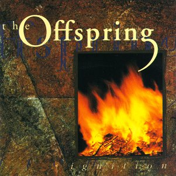
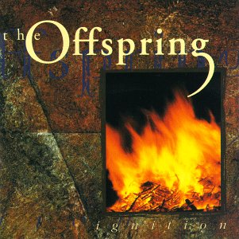

Ignition
Publicado por Arthur Baldner em

Ignition foi lançado em 16 de outubro de 1992 pela gravadora independente Epitaph Records.
Publicado por Arthur Baldner em

Ignition foi lançado em 16 de outubro de 1992 pela gravadora independente Epitaph Records.